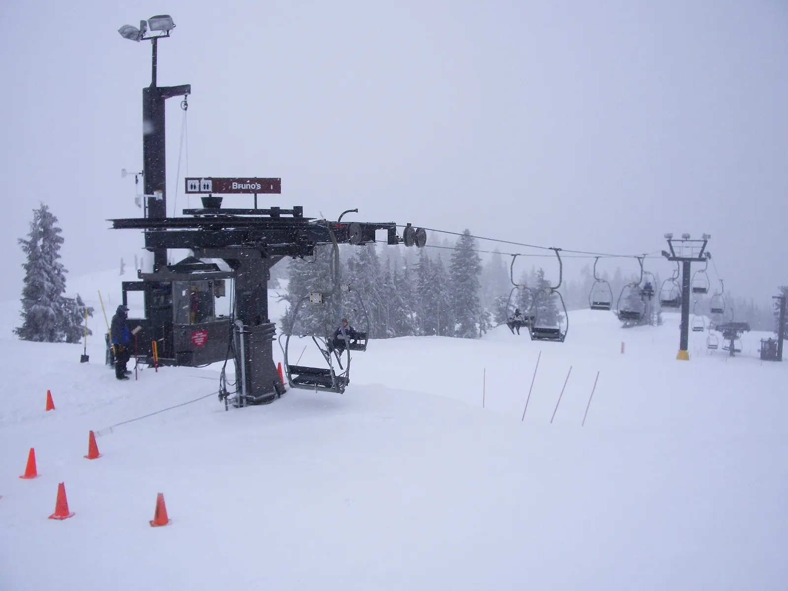

Timberline, on Mt Hood, Oregon · Ski conditions
Timberline Conditions and Webcams Today
Timberline's webcams and kid facts on Mt Hood: no opening date yet, kids 6 and under ski free, Kids Club from age 4. Portland is just over an hour's drive away, the resort says.
Family of 4: about $524 a peak day, $424 off-peak
Lift tickets for 2 adults and 2 kids 7-12; peak is weekends, opening day and holiday dates (listed below). With 2 kids 6 and under: $322 a peak day. Our sum of posted table prices, estimate. Read Nov 17; prices below.
Researched with AI (Miles Rowan) · sources linked and dated · How we check
Timberline's own status
Timberline's lift tickets page says it is closed until there is enough snow; no opening date posted. For lifts open today, check its conditions page (read Nov 17).
Our webcam read
No cam read from us yet. Cam reads show here only when a recent one has passed a separate automated accuracy check.

Plan the day with kids
- Season and hours: No opening date posted: Timberline says it opens once there is enough snow. Lift hours depend on weather and snow, and not all lifts run all hours.
- Season: Timberline calls its winter season Mt Hood's longest, late fall to end of May.
- Childcare: None named on the Timberline pages we read. Kids Club (from age 4, toilet trained) is the closest option.
- Kids Club, ages 4 to 12: Check-in 8:30-9:15am at the Kids Club desk in Wy'East Day Lodge; on snow 10am-12pm and 1-3pm, lunch 12-1; pickup 12:30-12:45 (half day) or 3pm. Bring snow clothes and goggles; a helmet is lent free.
- Kids Club dates: Daily Dec 19-Jan 4 and Mar 19-26; Fri-Sun Jan 8-Apr 4; plus Jan 18 and Feb 15. Timberline's lessons page says weekends and holidays only, so confirm when you book.
- Group sizes: The Kids Club page groups ages 4-5 (3 kids per instructor) and 6-12 (6 per instructor); the lessons page says 4-6 and 7-12. Private lessons take up to 3 kids under 8.
- Kids' tickets: Kids 6 and under ski free with an adult ticket. Junior is 7-12, teen 13-18. No need to buy ahead; the ticket page says all sales are final.
- Parking: Free, first come, first served. The Kids Club page says the lot can fill as early as 7:45am.
Ticket and Kids Club prices on Timberline's pages, read Nov 17:
- Family of 4 lift tickets, one peak day such as a Saturday (2 adults 19-64, 2 juniors 7-12): $524 (our sum of posted table prices, estimate)
- Same family on an off-peak weekday: $424 (our sum of posted table prices, estimate)
- Family of 4 with 2 kids 6 and under, peak day: $322 (our sum: kids free, estimate)
- Full-day ticket, adult / junior 7-12 / teen 13-18: $161 / $101 / $149 peak; $129 / $83 / $112 off-peak
- Kids Club full day with lift ticket and lunch, ages 4-5 / 6-12: $195 / $185 (half day $145 / $135; rentals $25 extra)
- Summit Pass beginner area at Government Camp, 9am-4pm: $60 adult, $43 ages 7-18 or 65+, free 6 and under (buy on arrival)
- Mt. Hood Express bus, Sandy to Timberline, each way: $2
From Timberline's lift tickets page, read Nov 17. Peak is Saturdays, Sundays, opening day and Nov 23-27, Dec 21-Jan 1, Jan 18 and Feb 15; off-peak is other weekdays. The page says winter tickets go on sale when the 2026/27 season starts and doesn't label the table with a season. Full-day tickets run 9am to close. No tax line. Kids Club prices don't say per child.
Lift tickets and lessons: Timberline posts no childcare and no Kids Club Lesson Protection price; check live. See Timberline lift tickets.
From Timberline lift tickets, Timberline ski and snowboard lessons, Timberline Kids Club, ages 4-12, Timberline directions, parking and transportation and Timberline winter activities, read Nov 17.
Getting there from Portland
- Car: US-26 east through Sandy and Government Camp, then 6 miles up Timberline Rd. Timberline says to expect snow and ice covered roads; its page states no chain rule.
- Bus: the Mt. Hood Express runs from Sandy to Timberline at limited capacity (fare under prices; schedule linked from Timberline's getting-here page).
- Shuttle: free Fri-Sun between the Summit Pass area and Wy'East Day Lodge for passholders and online ticket holders; first pickup 9am, last 4pm at Summit, 4:30pm at the lodge.
- Rentals: arrive at least 90 minutes before a lesson if you need them.
If the snow is thin
- Lift tickets: all sales final, no refunds, and no weather policy posted.
- Kids Club: change or cancel 48 hours ahead. Inside 48 hours only Lesson Protection, bought with the lesson, allows a refund. If weather closes the resort, lessons are refunded either way.
- Off the slopes: snowshoeing is listed with no details; we found no tubing or sledding on the pages we read.
From Timberline lift tickets and Timberline Kids Club, ages 4-12 and Timberline winter activities, read Nov 17.
Cam by cam
The 6 Timberline cam views our reader uses, by the names in our cam feed (see Timberline's own cam page, as listed in our cam feed Nov 17): Timberline Lodge front, Timberline snowy slope, Lift terminal and tower, Chairlift line, Timberline, Timberline parking lot, Lift line in fog. Once our reads start, each cam's last read time shows here.
How we read the cams: a program looks at Timberline's public webcam pictures and notes only what a picture can show: fresh snow, snow cover, snowmaking, moving lifts, how busy the base looks, visibility and the snow stake. Each read shows its time; after 90 minutes it is marked older, after 6 hours it is hidden. We never say whether terrain is safe, icy, groomed or open; Timberline's own report decides that. We don't show the cam pictures or count people.
Sources: Timberline webcams · Timberline winter activities · Timberline Kids Club, ages 4-12 · Timberline directions, parking and transportation · Timberline lift tickets · Timberline ski and snowboard lessons (read Nov 17). We haven't skied Timberline.